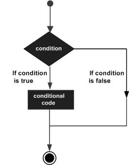

C# - Quick Guide
C# - Overview
C# is a modern, general-purpose object oriented programming language developed by Microsoft and approved by Ecma and ISO.
C# was developed by Anders Hejlsberg and his team during the development of .Net Framework.
C# is designed for Common Language Infrastructure (CLI), which consists of the executable code and runtime environment that allows use of various high-level languages to be used on different computer platforms and architectures.
The following reasons make C# a widely used professional language:
Modern, general purpose programming language
Object oriented.
Component oriented.
Easy to learn.
Structured language.
It produces efficient programs.
It can be compiled on a variety of computer platforms.
Part of .Net Framework.
Strong Programming Features of C#
Although C# constructs closely follows traditional high level languages C and C++ and being an object oriented programming language, it has strong resemblance with Java, it has numerous strong programming features that make it endearing to multitude of programmers worldwide.
Following is the list of few important features:
Boolean Conditions
Automatic Garbage Collection
Standard Library
Assembly Versioning
Properties and Events
Delegates and Events Management
Easy to use Generics
Indexers
Conditional Compilation
Simple Multithreading
LINQ and Lambda Expressions
Integration with Windows
C# - Environment
Integrated Development Environment (IDE) For C#
Microsoft provides the following development tools for C# programming:
Visual Studio 2010 (VS)
Visual C# 2010 Express (VCE)
Visual Web Developer
The last two are freely available from Microsoft official website. Using these tools you can write all kinds of C# programs from simple command-line applications to more complex applications. You can also write C# source code files using a basic text editor, like Notepad, and compile the code into assemblies using the command-line compiler, which is again a part of the .NET Framework.
Visual C# Express and Visual Web Developer Express edition are trimmed down versions of Visual Studio and has the same look and feel. They retain most features of Visual Studio. In this tutorial, we have used Visual C # 2010 Express.
You can download it from Microsoft Visual Studio. It gets automatically installed in your machine. Please note that you need an active internet connection for installing the express edition.
Writing C# Programs on Linux or Mac OS
Although the.NET Framework runs on the Windows operating system, there are some alternative versions that work on other operating systems. Mono is an open-source version of the .NET Framework, which includes a C# compiler and runs on several operating systems, including various flavors of Linux and Mac OS. Kindly check Go Mono.
The stated purpose of Mono is not only to be able to run Microsoft .NET applications cross-platform, but also to bring better development tools to Linux developers. Mono can be run on many operating systems including Android, BSD, iOS, Linux, OS X, Windows, Solaris and UNIX.
C# - Program Structure
C# Hello World Example
A C# program basically consists of the following parts:
Namespace declaration
A class
Class methods
Class attributes
A Main method
Statements & Expressions
Comments
Let us look at a simple code that would print the words "Hello World":
using System;
namespace HelloWorldApplication
{
class HelloWorld
{
static void Main(string[] args)
{
/* my first program in C# */
Console.WriteLine("Hello World");
Console.ReadKey();
}
}
}
When the above code is compiled and executed, it produces following result:
Hello World
Let us look at various parts of the above program:
The first line of the program using System; - the using keyword is used to include the System namespace in the program. A program generally has multiple using statements.
The next line has the namespace declaration. A namespace is a collection of classes. The HelloWorldApplication namespace contains the class HelloWorld.
The next line has a class declaration, the class HelloWorld, contains the data and method definitions that your program uses. Classes generally would contain more than one method. Methods define the behavior of the class. However, the HelloWorld class has only one method Main.
The next line defines the Main method, which is the entry point for all C# programs. The Main method states what the class will do when executed
The next line /*...*/ will be ignored by the compiler and it has been put to add additional comments in the program.
The Main method specifies its behavior with the statement Console.WriteLine("Hello World");
WriteLine is a method of the Console class defined in the System namespace. This statement causes the message "Hello, World!" to be displayed on the screen.
The last line Console.ReadKey(); is for the VS.NET Users. This makes the program wait for a key press and it prevents the screen from running and closing quickly when the program is launched from Visual Studio .NET.
Its worth to note the following points:
C# is case sensitive.
All statements and expression must end with a semicolon (;).
The program execution starts at the Main method.
Unlike Java, file name could be different from the class name.
Compile & Execute a C# Program:
If you are using Visual Studio.Net for compiling and executing C# programs, take the following steps:
Start Visual Studio.
On the menu bar, choose File, New, Project.
Choose Visual C# from templates, and then choose Windows.
Choose Console Application.
Specify a name for your project, and then choose the OK button.
The new project appears in Solution Explorer.
Write code in the Code Editor.
Click the Run button or the F5 key to run the project. A Command Prompt window appears that contains the line Hello World.
You can compile a C# program by using the command line instead of the Visual Studio IDE:
Open a text editor and add the above mentioned code.
Save the file as helloworld.cs
Open the command prompt tool and go to the directory where you saved the file.
Type csc helloworld.cs and press enter to compile your code.
If there are no errors in your code the command prompt will take you to the next line and would generate helloworld.exe executable file.
Next, type helloworld to execute your program.
You will be able to see "Hello World" printed on the screen.
C# - Basic Syntax
C# is an object oriented programming language. In Object Oriented Programming methodology a program consists of various objects that interact with each other by means of actions. The actions that an object may take are called methods. Objects of the same kind are said to have the same type or, more often, are said to be in the same class.
For example, let us consider a Rectangle object. It has attributes like length and width. Depending upon the design, it may need ways for accepting the values of these attributes, calculating area and display details.
Let us look at an implementation of a Rectangle class and discuss C# basic syntax, on the basis of our observations in it:
using System;
namespace RectangleApplication
{
class Rectangle
{
// member variables
double length;
double width;
public void Acceptdetails()
{
length = 4.5;
width = 3.5;
}
public double GetArea()
{
return length * width;
}
public void Display()
{
Console.WriteLine("Length: {0}", length);
Console.WriteLine("Width: {0}", width);
Console.WriteLine("Area: {0}", GetArea());
}
}
class ExecuteRectangle
{
static void Main(string[] args)
{
Rectangle r = new Rectangle();
r.Acceptdetails();
r.Display();
Console.ReadLine();
}
}
}
When the above code is compiled and executed, it produces following result:
Length: 4.5 Width: 3.5 Area: 15.75
The using Keyword
The first statement in any C# program is
using System;
The using keyword is used for including the namespaces in the program. A program can include multiple using statements.
The class Keyword
The class keyword is used for declaring a class.
Comments in C#
Comments are used for explaining code. Compilers ignore the comment entries. The multiline comments in C# programs start with /* and terminates with the characters */ as shown below:
/* This program demonstrates The basic syntax of C# programming Language */
Single line comments are indicated by the '//' symbol. For example,
}//end class Rectangle
Member Variables
Variables are attributes or data members of a class, used for storing data. In the preceding program, the Rectangle class has two member variables named length and width.
Member Functions
Functions are set of statements that perform a specific task. The member functions of a class are declared within the class. Our sample class Rectangle contains three member functions: AcceptDetails, GetArea and Display.
Instantiating a Class
In the preceding program, the class ExecuteRectangle is used as a class which contains the Main() method and instantiates the Rectangle class.
Identifiers
An identifier is a name used to identify a class, variable, function, or any other user-defined item. The basic rules for naming classes in C# are as follows:
A name must begin with a letter that could be followed by a sequence of letters, digits (0 - 9) or underscore. The first character in an identifier cannot be a digit.
It must not contain any embedded space or symbol like ? - +! @ # % ^ & * ( ) [ ] { } . ; : " ' / and \. However an underscore ( _ ) can be used.
It should not be a C# keyword.
C# - Data Types
In C#, variables are categorized into the following types:
Value types
Reference types
Pointer types
Value Types
The following table lists the available value types in C# 2010:
| Type | Represents | Range | Default Value |
|---|---|---|---|
| bool | Boolean value | True or False | False |
| byte | 8-bit unsigned integer | 0 to 255 | 0 |
| char | 16-bit Unicode character | U +0000 to U +ffff | '\0' |
| decimal | 128-bit precise decimal values with 28-29 significant digits | (-7.9 x 1028 to 7.9 x 1028) / 100 to 28 | 0.0M |
| double | 64-bit double-precision floating point type | (+/-)5.0 x 10-324 to (+/-)1.7 x 10308 | 0.0D |
| float | 32-bit single-precision floating point type | -3.4 x 1038 to + 3.4 x 1038 | 0.0F |
| int | 32-bit signed integer type | -2,147,483,648 to 2,147,483,647 | 0 |
| long | 64-bit signed integer type | -923,372,036,854,775,808 to 9,223,372,036,854,775,807 | 0L |
| sbyte | 8-bit signed integer type | -128 to 127 | 0 |
| short | 16-bit signed integer type | -32,768 to 32,767 | 0 |
| uint | 32-bit signed integer type | 0 to 4,294,967,295 | 0 |
| ulong | 64-bit signed integer type | 0 to 18,446,744,073,709,551,615 | 0 |
| ushort | 16-bit signed integer type | 0 to 65,535 | 0 |
Reference Types
The reference types do not contain the actual data stored in a variable, but they contain a reference to the variables.
In other words, they refer to a memory location. Using more than one variable, the reference types can refer to a memory location. If the data in the memory location is changed by one of the variables, the other variable automatically reflects this change in value. Example of built in reference types are: object, dynamic and string.
Object Type
The Object Type is the ultimate base class for all data types in C# Common Type System(CTS). Object is an alias for System.Object class. So object types can be assigned values of any other types, value types, reference types, predefined or user-defined types. However, before assigning values, it needs type conversion.
When a value type is converted to object type, it is called boxing and on the other hand, when an object type is converted to a value type it is called unboxing.
object obj; obj = 100; // this is boxing
Dynamic Type
You can store any type of value in the dynamic data type variable. Type checking for these types of variables takes place at runtime.
Syntax for declaring a dynamic type is:
dynamic <variable_name> = value;
For example,
dynamic d = 20;
Dynamic types are similar to object types except that, type checking for object type variables takes place at compile time, whereas that for the dynamic type variables take place at run time.
String Type
The String Type allows you to assign any string values to a variable. The string type is an alias for the System.String class. It is derived from object type. The value for a string type can be assigned using string literals in two forms: quoted and @quoted.
For example,
String str = "Tutorials Point";
A @quoted string literal looks like:
@"Tutorials Point";
The user defined reference types are: class, interface, or delegate. We will discuss these types in later chapter.
Pointer Types
Pointer type variables store the memory address of another type. Pointers in C# have the same capabilities as in C or C++.
Syntax for declaring a pointer type is:
type* identifier;
For example,
char* cptr; int* iptr;
C# - Type Conversion
Type conversion is basically type casting, or converting one type of data to another type. In C#, type casting has two forms:
Implicit type conversion - these conversions are performed by C# in a type-safe manner. Examples are conversions from smaller to larger integral types, and conversions from derived classes to base classes.
Explicit type conversion - these conversions are done explicitly by users using the pre-defined functions. Explicit conversions require a cast operator.
C# Type Conversion Methods
C# provides the following built-in type conversion methods:
| S.N | Methods & Description |
|---|---|
| 1 | ToBoolean Converts a type to a Boolean value, where possible. |
| 2 | ToByte Converts a type to a byte. |
| 3 | ToChar Converts a type to a single Unicode character, where possible. |
| 4 | ToDateTime Converts a type (integer or string type) to date-time structures. |
| 5 | ToDecimal Converts a floating point or integer type to a decimal type. |
| 6 | ToDouble Converts a type to a double type. |
| 7 | ToInt16 Converts a type to a 16-bit integer. |
| 8 | ToInt32 Converts a type to a 32-bit integer. |
| 9 | ToInt64 Converts a type to a 64-bit integer. |
| 10 | ToSbyte Converts a type to a signed byte type. |
| 11 | ToSingle Converts a type to a small floating point number. |
| 12 | ToString Converts a type to a string. |
| 13 | ToType Converts a type to a specified type. |
| 14 | ToUInt16 Converts a type to an unsigned int type. |
| 15 | ToUInt32 Converts a type to an unsigned long type. |
| 16 | ToUInt64 Converts a type to an unsigned big integer. |
The following example converts various value types to string type:
namespace TypeConversionApplication
{
class StringConversion
{
static void Main(string[] args)
{
int i = 75;
float f = 53.005f;
double d = 2345.7652;
bool b = true;
Console.WriteLine(i.ToString());
Console.WriteLine(f.ToString());
Console.WriteLine(d.ToString());
Console.WriteLine(b.ToString());
Console.ReadKey();
}
}
}
When the above code is compiled and executed, it produces following result:
75 53.005 2345.7652 True
C# - Variables
A variable is nothing but a name given to a storage area that our programs can manipulate. Each variable in C# has a specific type, which determines the size and layout of the variable's memory; the range of values that can be stored within that memory; and the set of operations that can be applied to the variable.
We have already discussed various data types. The basic value types provided in C# can be categorized as:
| Type | Example |
|---|---|
| Integral types | sbyte, byte, short, ushort, int, uint, long, ulong and char |
| Floating point types | float and double |
| Decimal types | decimal |
| Boolean types | true or false values, as assigned |
| Nullable types | Nullable data types |
C# also allows defining other value types of variable like enum and reference types of variables like class, which we will cover in subsequent chapters. For this chapter, let us study only basic variable types.
Variable Declaration in C#
Syntax for variable declaration in C# is:
<data_type> <variable_list>;
Here, data_type must be a valid C# data type including char, int, float, double, or any user defined data type etc., and variable_list may consist of one or more identifier names separated by commas.
Some valid variable declarations along with their definition are shown here:
int i, j, k; char c, ch; float f, salary; double d;
You can initialize a variable at the time of declaration as:
int i = 100;
Variable Initialization in C#
Variables are initialized (assigned a value) with an equal sign followed by a constant expression. The general form of initialization is:
variable_name = value;
Variables can be initialized (assigned an initial value) in their declaration. The initializer consists of an equal sign followed by a constant expression as:
<data_type> <variable_name> = value;
Some examples are:
int d = 3, f = 5; /* initializing d and f. */ byte z = 22; /* initializes z. */ double pi = 3.14159; /* declares an approximation of pi. */ char x = 'x'; /* the variable x has the value 'x'. */
Lvalues and Rvalues in C#:
There are two kinds of expressions in C#:
lvalue : An expression that is an lvalue may appear as either the left-hand or right-hand side of an assignment.
rvalue : An expression that is an rvalue may appear on the right- but not left-hand side of an assignment.
Variables are lvalues and so may appear on the left-hand side of an assignment. Numeric literals are rvalues and so may not be assigned and can not appear on the left-hand side. Following is a valid statement:
int g = 20;
But following is not a valid statement and would generate compile-time error:
10 = 20;
C# - Constants and Literals
The constants refer to fixed values that the program may not alter during its execution. These fixed values are also called literals. Constants can be of any of the basic data types like an integer constant, a floating constant, a character constant, or a string literal. There are also enumeration constants as well.
The constants are treated just like regular variables except that their values cannot be modified after their definition.
Integer Literals
An integer literal can be a decimal, octal, or hexadecimal constant. A prefix specifies the base or radix: 0x or 0X for hexadecimal, 0 for octal, and nothing for
An integer literal can also have a suffix that is a combination of U and L, for unsigned and long, respectively. The suffix can be uppercase or lowercase and can be in any order.
Here are some examples of integer literals:
212 /* Legal */ 215u /* Legal */ 0xFeeL /* Legal */ 078 /* Illegal: 8 is not an octal digit */ 032UU /* Illegal: cannot repeat a suffix */
Following are other examples of various types of Integer literals:
85 /* decimal */ 0213 /* octal */ 0x4b /* hexadecimal */ 30 /* int */ 30u /* unsigned int */ 30l /* long */ 30ul /* unsigned long */
Floating-point Literals
A floating-point literal has an integer part, a decimal point, a fractional part, and an exponent part. You can represent floating point literals either in decimal form or exponential form.
Here are some examples of floating-point literals:
3.14159 /* Legal */ 314159E-5L /* Legal */ 510E /* Illegal: incomplete exponent */ 210f /* Illegal: no decimal or exponent */ .e55 /* Illegal: missing integer or fraction */
While representing using decimal form, you must include the decimal point, the exponent, or both and while representing using exponential form you must include the integer part, the fractional part, or both. The signed exponent is introduced by e or E.
Character Constants
Character literals are enclosed in single quotes e.g., 'x' and can be stored in a simple variable of char type. A character literal can be a plain character (e.g., 'x'), an escape sequence (e.g., '\t'), or a universal character (e.g., '\u02C0').
There are certain characters in C# when they are proceeded by a back slash they will have special meaning and they are used to represent like newline (\n) or tab (\t). Here you have a list of some of such escape sequence codes:
| Escape sequence | Meaning |
|---|---|
| \\ | \ character |
| \' | ' character |
| \" | " character |
| \? | ? character |
| \a | Alert or bell |
| \b | Backspace |
| \f | Form feed |
| \n | Newline |
| \r | Carriage return |
| \t | Horizontal tab |
| \v | Vertical tab |
| \ooo | Octal number of one to three digits |
| \xhh . . . | Hexadecimal number of one or more digits |
String Literals
String literals or constants are enclosed in double quotes "" or with @"". A string contains characters that are similar to character literals: plain characters, escape sequences, and universal characters.
You can break a long line into multiple lines using string literals and separating the parts using whitespaces.
Here are some examples of string literals. All the three forms are identical strings.
"hello, dear" "hello, \ dear" "hello, " "d" "ear" @"hello dear"
Defining Constants
Constants are defined using the const keyword. Syntax for defining a constant is:
const <data_type> <constant_name> = value;
C# - Operators
An operator is a symbol that tells the compiler to perform specific mathematical or logical manipulations. C# is rich in built-in operators and provides the following type of operators:
Arithmetic Operators
Relational Operators
Logical Operators
Bitwise Operators
Assignment Operators
Misc Operators
This tutorial will explain the arithmetic, relational, and logical, bitwise, assignment and other operators one by one.
Arithmetic Operators
Following table shows all the arithmetic operators supported by C#. Assume variable A holds 10 and variable B holds 20 then:
| Operator | Description | Example |
|---|---|---|
| + | Adds two operands | A + B will give 30 |
| - | Subtracts second operand from the first | A - B will give -10 |
| * | Multiply both operands | A * B will give 200 |
| / | Divide numerator by de-numerator | B / A will give 2 |
| % | Modulus Operator and remainder of after an integer division | B % A will give 0 |
| ++ | Increment operator increases integer value by one | A++ will give 11 |
| -- | Decrement operator decreases integer value by one | A-- will give 9 |
Relational Operators
Following table shows all the relational operators supported by C#. Assume variable A holds 10 and variable B holds 20 then:
| Operator | Description | Example |
|---|---|---|
| == | Checks if the value of two operands is equal or not, if yes then condition becomes true. | (A == B) is not true. |
| != | Checks if the value of two operands is equal or not, if values are not equal then condition becomes true. | (A != B) is true. |
| > | Checks if the value of left operand is greater than the value of right operand, if yes then condition becomes true. | (A > B) is not true. |
| < | Checks if the value of left operand is less than the value of right operand, if yes then condition becomes true. | (A < B) is true. |
| >= | Checks if the value of left operand is greater than or equal to the value of right operand, if yes then condition becomes true. | (A >= B) is not true. |
| <= | Checks if the value of left operand is less than or equal to the value of right operand, if yes then condition becomes true. | (A <= B) is true. |
Logical Operators
Following table shows all the logical operators supported by C#. Assume variable A holds Boolean value true and variable B holds Boolean value false then:
| Operator | Description | Example |
|---|---|---|
| && | Called Logical AND operator. If both the operands are non zero then condition becomes true. | (A && B) is false. |
| || | Called Logical OR Operator. If any of the two operands is non zero then condition becomes true. | (A || B) is true. |
| ! | Called Logical NOT Operator. Use to reverses the logical state of its operand. If a condition is true then Logical NOT operator will make false. | !(A && B) is true. |
Bitwise Operators
| Operator | Description | Example |
|---|---|---|
| & | Binary AND Operator copies a bit to the result if it exists in both operands. | (A & B) will give 12 which is 0000 1100 |
| | | Binary OR Operator copies a bit if it exists in either operand. | (A | B) will give 61 which is 0011 1101 |
| ^ | Binary XOR Operator copies the bit if it is set in one operand but not both. | (A ^ B) will give 49 which is 0011 0001 |
| ~ | Binary Ones Complement Operator is unary and has the effect of 'flipping' bits. | (~A ) will give -60 which is 1100 0011 |
| << | Binary Left Shift Operator. The left operands value is moved left by the number of bits specified by the right operand. | A << 2 will give 240 which is 1111 0000 |
| >> | Binary Right Shift Operator. The left operands value is moved right by the number of bits specified by the right operand. | A >> 2 will give 15 which is 0000 1111 |
Assignment Operators
There are following assignment operators supported by C#:
| Operator | Description | Example |
|---|---|---|
| = | Simple assignment operator, Assigns values from right side operands to left side operand | C = A + B will assign value of A + B into C |
| += | Add AND assignment operator, It adds right operand to the left operand and assign the result to left operand | C += A is equivalent to C = C + A |
| -= | Subtract AND assignment operator, It subtracts right operand from the left operand and assign the result to left operand | C -= A is equivalent to C = C - A |
| *= | Multiply AND assignment operator, It multiplies right operand with the left operand and assign the result to left operand | C *= A is equivalent to C = C * A |
| /= | Divide AND assignment operator, It divides left operand with the right operand and assign the result to left operand | C /= A is equivalent to C = C / A |
| %= | Modulus AND assignment operator, It takes modulus using two operands and assign the result to left operand | C %= A is equivalent to C = C % A |
| <<= | Left shift AND assignment operator | C <<= 2 is same as C = C << 2 |
| >>= | Right shift AND assignment operator | C >>= 2 is same as C = C >> 2 |
| &= | Bitwise AND assignment operator | C &= 2 is same as C = C & 2 |
| ^= | bitwise exclusive OR and assignment operator | C ^= 2 is same as C = C ^ 2 |
| |= | bitwise inclusive OR and assignment operator | C |= 2 is same as C = C | 2 |
Misc Operators
There are few other important operators including sizeof, typeof and ? : supported by C#.
| Operator | Description | Example |
|---|---|---|
| sizeof() | Returns the size of a data type. | sizeof(int), will return 4. |
| typeof() | Returns the type of a class. | typeof(StreamReader); |
| & | Returns the address of an variable. | &a; will give actual address of the variable. |
| * | Pointer to a variable. | *a; will pointer to a variable. |
| ? : | Conditional Expression | If Condition is true ? Then value X : Otherwise value Y |
| is | Determines whether an object is of a certain type. | If( Ford is Car) // checks if Ford is an object of the Car class. |
| as | Cast without raising an exception if the cast fails. | Object obj = new StringReader("Hello"); StringReader r = obj as StringReader; |
Operators Precedence in C#
Operator precedence determines the grouping of terms in an expression. This affects how an expression is evaluated. Certain operators have higher precedence than others; for example, the multiplication operator has higher precedence than the addition operator:
For example x = 7 + 3 * 2; Here x is assigned 13, not 20 because operator * has higher precedence than + so it first get multiplied with 3*2 and then adds into 7.
Here operators with the highest precedence appear at the top of the table, those with the lowest appear at the bottom. Within an expression, higher precedence operators will be evaluated first.
| Category | Operator | Associativity |
|---|---|---|
| Postfix | () [] -> . ++ - - | Left to right |
| Unary | + - ! ~ ++ - - (type)* & sizeof | Right to left |
| Multiplicative | * / % | Left to right |
| Additive | + - | Left to right |
| Shift | << >> | Left to right |
| Relational | < <= > >= | Left to right |
| Equality | == != | Left to right |
| Bitwise AND | & | Left to right |
| Bitwise XOR | ^ | Left to right |
| Bitwise OR | | | Left to right |
| Logical AND | && | Left to right |
| Logical OR | || | Left to right |
| Conditional | ?: | Right to left |
| Assignment | = += -= *= /= %=>>= <<= &= ^= |= | Right to left |
| Comma | , | Left to right |
C# - Decision Making
Decision making structures require that the programmer specify one or more conditions to be evaluated or tested by the program, along with a statement or statements to be executed if the condition is determined to be true, and optionally, other statements to be executed if the condition is determined to be false.
Following is the general from of a typical decision making structure found in most of the programming languages:
C# provides following types of decision making statements. Click the following links to check their detail.
| Statement | Description |
|---|---|
| if statement | An if statement consists of a boolean expression followed by one or more statements. |
| if...else statement | An if statement can be followed by an optional else statement, which executes when the boolean expression is false. |
| nested if statements | You can use one if or else if statement inside another if or else if statement(s). |
| switch statement | A switch statement allows a variable to be tested for equality against a list of values. |
| nested switch statements | You can use one swicth statement inside another switch statement(s). |
C# - Loops
There may be a situation when you need to execute a block of code several number of times. In general statements are executed sequentially: The first statement in a function is executed first, followed by the second, and so on.
Programming languages provide various control structures that allow for more complicated execution paths.
A loop statement allows us to execute a statement or group of statements multiple times and following is the general from of a loop statement in most of the programming languages:

C# provides following types of loop to handle looping requirements. Click the following links to check their detail.
| Loop Type | Description |
|---|---|
| while loop | Repeats a statement or group of statements until a given condition is true. It tests the condition before executing the loop body. |
| for loop | Execute a sequence of statements multiple times and abbreviates the code that manages the loop variable. |
| do...while loop | Like a while statement, except that it tests the condition at the end of the loop body |
| nested loops | You can use one or more loop inside any another while, for or do..while loop. |
Loop Control Statements:
Loop control statements change execution from its normal sequence. When execution leaves a scope, all automatic objects that were created in that scope are destroyed.
C# provides the following control statements. Click the following links to check their detail.
| Control Statement | Description |
|---|---|
| break statement | Terminates the loop or switch statement and transfers execution to the statement immediately following the loop or switch. |
| continue statement | Causes the loop to skip the remainder of its body and immediately retest its condition prior to reiterating. |
C# - Encapsulation
Encapsulation is defined 'as the process of enclosing one or more items within a physical or logical package'. Encapsulation, in object oriented programming methodology, prevents access to implementation details.
Abstraction and encapsulation are related features in object oriented programming. Abstraction allows making relevant information visible and encapsulation enables a programmer to implement the desired level of abstraction.
Encapsulation is implemented by using access specifiers. An access specifier defines the scope and visibility of a class member. C# supports the following access specifiers:
Public
Private
Protected
Internal
Protected internal
Public Access Specifier
Public access specifier allows a class to expose its member variables and member functions to other functions and objects. Any public member can be accessed from outside the class.
The following example illustrates this:
using System;
namespace RectangleApplication
{
class Rectangle
{
//member variables
public double length;
public double width;
public double GetArea()
{
return length * width;
}
public void Display()
{
Console.WriteLine("Length: {0}", length);
Console.WriteLine("Width: {0}", width);
Console.WriteLine("Area: {0}", GetArea());
}
}//end class Rectangle
class ExecuteRectangle
{
static void Main(string[] args)
{
Rectangle r = new Rectangle();
r.length = 4.5;
r.width = 3.5;
r.Display();
Console.ReadLine();
}
}
}
When the above code is compiled and executed, it produces following result:
Length: 4.5 Width: 3.5 Area: 15.75
In the preceding example, the member variables length and width are declared public, so they can be accessed from the function Main() using an instance of the Rectangle class, named r.
The member function Display() and GetArea() can also access these variables directly without using any instance of the class.
The member functions Display() is also declared public, so it can also be accessed from Main() using an instance of the Rectangle class, named r.
Private Access Specifier
Private access specifier allows a class to hide its member variables and member functions from other functions and objects. Only functions of the same class can access its private members. Even an instance of a class cannot access its private members.
The following example illustrates this:
using System;
namespace RectangleApplication
{
class Rectangle
{
//member variables
private double length;
private double width;
public void Acceptdetails()
{
Console.WriteLine("Enter Length: ");
length = Convert.ToDouble(Console.ReadLine());
Console.WriteLine("Enter Width: ");
width = Convert.ToDouble(Console.ReadLine());
}
public double GetArea()
{
return length * width;
}
public void Display()
{
Console.WriteLine("Length: {0}", length);
Console.WriteLine("Width: {0}", width);
Console.WriteLine("Area: {0}", GetArea());
}
}//end class Rectangle
class ExecuteRectangle
{
static void Main(string[] args)
{
Rectangle r = new Rectangle();
r.Acceptdetails();
r.Display();
Console.ReadLine();
}
}
}
When the above code is compiled and executed, it produces following result:
Enter Length: 4.4 Enter Width: 3.3 Length: 4.4 Width: 3.3 Area: 14.52
In the preceding example, the member variables length and width are declared private, so they cannot be accessed from the function Main(). The member functions AcceptDetails() and Display() can access these variables. Since the member functions AcceptDetails() and Display() are declared public, they can be accessed from Main() using an instance of the Rectangle class, named r.
Protected Access Specifier
Protected access specifier allows a child class to access the member variables and member functions of its base class. This way it helps in implementing inheritance. We will discuss this in more details in the inheritance chapter.
Internal Access Specifier
Internal access specifier allows a class to expose its member variables and member functions to other functions and objects in the current assembly. In other words, any member with internal access specifier can be accessed from any class or method defined within the application in which the member is defined.
The following program illustrates this:
using System;
namespace RectangleApplication
{
class Rectangle
{
//member variables
internal double length;
internal double width;
double GetArea()
{
return length * width;
}
public void Display()
{
Console.WriteLine("Length: {0}", length);
Console.WriteLine("Width: {0}", width);
Console.WriteLine("Area: {0}", GetArea());
}
}//end class Rectangle
class ExecuteRectangle
{
static void Main(string[] args)
{
Rectangle r = new Rectangle();
r.length = 4.5;
r.width = 3.5;
r.Display();
Console.ReadLine();
}
}
}
When the above code is compiled and executed, it produces following result:
Length: 4.5 Width: 3.5 Area: 15.75
In the preceding example, notice that the member function GetArea() is not declared with any access specifier. Then what would be the default access specifier of a class member if we don't mention any? It is private.
Protected Internal Access Specifier
The protected internal access specifier allows a class to hide its member variables and member functions from other class objects and functions, except a child class within the same application. This is also used while implementing inheritance.
C# - Methods
A method is a group of statements that together perform a task. Every C# program has at least one class with a method named Main.
To use a method, you need to:
Define the method
Call the method
Defining Methods in C#
When you define a method, you basically declare the elements of its structure. The syntax for defining a method in C# is as follows:
<Access Specifier> <Return Type> <Method Name>(Parameter List)
{
Method Body
}
Following are the various elements of a method:
Access Specifier: This determines the visibility of a variable or a method from another class.
Return type: A method may return a value. The return type is the data type of the value the method returns. If the method is not returning any values, then the return type is void.
Method name: Method name is a unique identifier and it is case sensitive. It cannot be same as any other identifier declared in the class.
Parameter list: Enclosed between parentheses, the parameters are used to pass and receive data from a method. The parameter list refers to the type, order, and number of the parameters of a method. Parameters are optional; that is, a method may contain no parameters.
Method body: This contains the set of instructions needed to complete the required activity.
Example:
Following code snippet shows a function FindMax that takes two integer values and returns the larger of the two. It has public access specifier, so it can be accessed from outside the class using an instance of the class.
class NumberManipulator
{
public int FindMax(int num1, int num2)
{
/* local variable declaration */
int result;
if (num1 > num2)
result = num1;
else
result = num2;
return result;
}
...
}
Calling Methods in C#
You can call a method using the name of the method. The following example illustrates this:
using System;
namespace CalculatorApplication
{
class NumberManipulator
{
public int FindMax(int num1, int num2)
{
/* local variable declaration */
int result;
if (num1 > num2)
result = num1;
else
result = num2;
return result;
}
static void Main(string[] args)
{
/* local variable definition */
int a = 100;
int b = 200;
int ret;
NumberManipulator n = new NumberManipulator();
//calling the FindMax method
ret = n.FindMax(a, b);
Console.WriteLine("Max value is : {0}", ret );
Console.ReadLine();
}
}
When the above code is compiled and executed, it produces following result:
Max value is : 200
C# - Nullables
C# provides a special data types, the nullable types, to which you can assign normal range of values as well as null values.
For example, you can store any value from -2,147,483,648 to 2,147,483,647 or null in a Nullable< Int32 > variable. Similarly, you can assign true, false or null in a Nullable< bool > variable. Syntax for declaring a nullable type is as follows:
< data_type> ? <variable_name> = null;
The following example demonstrates use of nullable data types:
using System;
namespace CalculatorApplication
{
class NullablesAtShow
{
static void Main(string[] args)
{
int? num1 = null;
int? num2 = 45;
double? num3 = new double?();
double? num4 = 3.14157;
bool? boolval = new bool?();
// display the values
Console.WriteLine("Nullables at Show: {0}, {1}, {2}, {3}",
num1, num2, num3, num4);
Console.WriteLine("A Nullable boolean value: {0}", boolval);
Console.ReadLine();
}
}
}
When the above code is compiled and executed, it produces following result:
Nullables at Show: , 45, , 3.14157 A Nullable boolean value:
The Null Coalescing Operator (??)
The null coalescing operator is used with the nullable value types and reference types. It is used for converting an operand to the type of another nullable( or not) value type operand, where an implicit conversion is possible.
If the value of the first operand is null, then the operator returns the value of the second operand, otherwise it returns the value of the first operand. The following example explains this:
using System;
namespace CalculatorApplication
{
class NullablesAtShow
{
static void Main(string[] args)
{
double? num1 = null;
double? num2 = 3.14157;
double num3;
num3 = num1 ?? 5.34;
Console.WriteLine(" Value of num3: {0}", num3);
num3 = num2 ?? 5.34;
Console.WriteLine(" Value of num3: {0}", num3);
Console.ReadLine();
}
}
}
When the above code is compiled and executed, it produces following result:
Value of num3: 5.34 Value of num3: 3.14157
C# - Arrays
An array stores a fixed-size sequential collection of elements of the same type. An array is used to store a collection of data, but it is often more useful to think of an array as a collection of variables of the same type.
Instead of declaring individual variables, such as number0, number1, ..., and number99, you declare one array variable such as numbers and use numbers[0], numbers[1], and ..., numbers[99] to represent individual variables. A specific element in an array is accessed by an index.
All arrays consist of contiguous memory locations. The lowest address corresponds to the first element and the highest address to the last element.

Declaring Arrays
To declare an array in C#, you can use the following syntax:
datatype[] arrayName;
where,
datatype is used to specify the type of elements to be stored in the array.
[ ] specifies the rank of the array. The rank specifies the size of the array.
arrayName specifies the name of the array.
For example,
double[] balance;
Initializing an Array
Declaring an array does not initialize the array in the memory. When the array variable is initialized, you can assign values to the array.
Array is a reference type, so you need to use the new keyword to create an instance of the array.
For example,
double[] balance = new double[10];
Assigning Values to an Array
You can assign values to individual array elements, by using the index number, like:
double[] balance = new double[10]; balance[0] = 4500.0;
You can assign values to the array at the time of declaration, like:
double[] balance = { 2340.0, 4523.69, 3421.0};
You can also create and initialize an array, like:
int [] marks = new int[5] { 99, 98, 92, 97, 95};
In the preceding case, you may also omit the size of the array, like:
int [] marks = new int[] { 99, 98, 92, 97, 95};
You can also copy an array variable into another target array variable. In that case, both the target and source would point to the same memory location:
int [] marks = new int[] { 99, 98, 92, 97, 95};
int[] score = marks;
When you create an array, C# compiler implicitly initializes each array element to a default value depending on the array type. For example for an int array all elements would be initialized to 0.
Accessing Array Elements
An element is accessed by indexing the array name. This is done by placing the index of the element within square brackets after the name of the array. For example:
double salary = balance[9];
Following is an example which will use all the above mentioned three concepts viz. declaration, assignment and accessing arrays:
using System;
namespace ArrayApplication
{
class MyArray
{
static void Main(string[] args)
{
int [] n = new int[10]; /* n is an array of 10 integers */
int i,j;
/* initialize elements of array n */
for ( i = 0; i < 10; i++ )
{
n[ i ] = i + 100;
}
/* output each array element's value */
for (j = 0; j < 10; j++ )
{
Console.WriteLine("Element[{0}] = {1}", j, n[j]);
}
Console.ReadKey();
}
}
}
When the above code is compiled and executed, it produces following result:
Element[0] = 100 Element[1] = 101 Element[2] = 102 Element[3] = 103 Element[4] = 104 Element[5] = 105 Element[6] = 106 Element[7] = 107 Element[8] = 108 Element[9] = 109
C# - Strings
In C# you can use strings as array of characters, however, more common practice is to use the string keyword to declare a string variable. The string keyword is an alias for the System.String class.
Creating a String Object
You can create string object using one of the following methods:
By assigning a string literal to a String variable
By using a String class constructor
By using the string concatenation operator (+)
By retrieving a property or calling a method that returns a string
By calling a formatting method to convert a value or object to its string representation
The following example demonstrates this:
using System;
namespace StringApplication
{
class Program
{
static void Main(string[] args)
{
//from string literal and string concatenation
string fname, lname;
fname = "Rowan";
lname = "Atkinson";
string fullname = fname + lname;
Console.WriteLine("Full Name: {0}", fullname);
//by using string constructor
char[] letters = { 'H', 'e', 'l', 'l','o' };
string greetings = new string(letters);
Console.WriteLine("Greetings: {0}", greetings);
//methods returning string
string[] sarray = { "Hello", "From", "Tutorials", "Point" };
string message = String.Join(" ", sarray);
Console.WriteLine("Message: {0}", message);
//formatting method to convert a value
DateTime waiting = new DateTime(2012, 10, 10, 17, 58, 1);
string chat = String.Format("Message sent at {0:t} on {0:D}",
waiting);
Console.WriteLine("Message: {0}", chat);
Console.ReadKey() ;
}
}
}
When the above code is compiled and executed, it produces following result:
Full Name: Rowan Atkinson Greetings: Hello Message: Hello From Tutorials Point Message: Message sent at 5:58 PM on Wednesday, October 10, 2012
C# - Structures
In C#, a structure is a value type data type. It helps you to make a single variable hold related data of various data types. The struct keyword is used for creating a structure.
Structures are used to represent a record. Suppose you want to keep track of your books in a library. You might want to track the following attributes about each book:
Title
Author
Subject
Book ID
Defining a Structure
To define a structure, you must use the struct statement. The struct statement defines a new data type, with more than one member for your program.
For example, here is the way you would declare the Book structure:
struct Books
{
public string title;
public string author;
public string subject;
public int book_id;
};
The following program shows the use of the structure:
using System;
struct Books
{
public string title;
public string author;
public string subject;
public int book_id;
};
public class testStructure
{
public static void Main(string[] args)
{
Books Book1; /* Declare Book1 of type Book */
Books Book2; /* Declare Book2 of type Book */
/* book 1 specification */
Book1.title = "C Programming";
Book1.author = "Nuha Ali";
Book1.subject = "C Programming Tutorial";
Book1.book_id = 6495407;
/* book 2 specification */
Book2.title = "Telecom Billing";
Book2.author = "Zara Ali";
Book2.subject = "Telecom Billing Tutorial";
Book2.book_id = 6495700;
/* print Book1 info */
Console.WriteLine( "Book 1 title : {0}", Book1.title);
Console.WriteLine("Book 1 author : {0}", Book1.author);
Console.WriteLine("Book 1 subject : {0}", Book1.subject);
Console.WriteLine("Book 1 book_id :{0}", Book1.book_id);
/* print Book2 info */
Console.WriteLine("Book 2 title : {0}", Book2.title);
Console.WriteLine("Book 2 author : {0}", Book2.author);
Console.WriteLine("Book 2 subject : {0}", Book2.subject);
Console.WriteLine("Book 2 book_id : {0}", Book2.book_id);
Console.ReadKey();
}
}
When the above code is compiled and executed, it produces following result:
Book 1 title : C Programming Book 1 author : Nuha Ali Book 1 subject : C Programming Tutorial Book 1 book_id : 6495407 Book 2 title : Telecom Billing Book 2 author : Zara Ali Book 2 subject : Telecom Billing Tutorial Book 2 book_id : 6495700
C# - Enums
An enumeration is a set of named integer constants. An enumerated type is declared using the enum keyword.
C# enumerations are value data type. In other words, enumeration contains its own values and cannot inherit or cannot pass inheritance.
Declaring enum Variable
The general syntax for declaring an enumeration is:
enum <enum_name>
{
enumeration list
};
Where,
The enum_name specifies the enumeration type name.
The enumeration list is a comma-separated list of identifiers.
Each of the symbols in the enumeration list stands for an integer value, one greater than the symbol that precedes it. By default, the value of the first enumeration symbol is 0. For example:
enum Days { Sun, Mon, tue, Wed, thu, Fri, Sat };
Example:
The following example demonstrates use of enum variable:
using System;
namespace EnumApplication
{
class EnumProgram
{
enum Days { Sun, Mon, tue, Wed, thu, Fri, Sat };
static void Main(string[] args)
{
int WeekdayStart = (int)Days.Mon;
int WeekdayEnd = (int)Days.Fri;
Console.WriteLine("Monday: {0}", WeekdayStart);
Console.WriteLine("Friday: {0}", WeekdayEnd);
Console.ReadKey();
}
}
}
When the above code is compiled and executed, it produces following result:
Monday: 1 Friday: 5
C# - Classes
When you define a class, you define a blueprint for a data type. This doesn't actually define any data, but it does define what the class name means, that is, what an object of the class will consist of and what operations can be performed on such an object. Objects are instances of a class. The methods and variables that constitute a class are called members of the class.
Class Definition
A class definition starts with the keyword class followed by the class name; and the class body, enclosed by a pair of curly braces. Following is the general form of a class definition:
<access specifier> class class_name
{
// member variables
<access specifier> <data type> variable1;
<access specifier> <data type> variable2;
...
<access specifier> <data type> variableN;
// member methods
<access specifier> <return type> method1(parameter_list)
{
// method body
}
<access specifier> <return type> method2(parameter_list)
{
// method body
}
...
<access specifier> <return type> methodN(parameter_list)
{
// method body
}
}
Please note that,
Access specifiers specify the access rules for the members as well as the class itself, if not mentioned then the default access specifier for a class type is internal. Default access for the members is private.
Data type specifies the type of variable, and return type specifies the data type of the data, the method returns, if any.
To access the class members, you will use the dot (.) operator.
The dot operator links the name of an object with the name of a member.
The following example illustrates the concepts discussed so far:
using System;
namespace BoxApplication
{
class Box
{
public double length; // Length of a box
public double breadth; // Breadth of a box
public double height; // Height of a box
}
class Boxtester
{
static void Main(string[] args)
{
Box Box1 = new Box(); // Declare Box1 of type Box
Box Box2 = new Box(); // Declare Box2 of type Box
double volume = 0.0; // Store the volume of a box here
// box 1 specification
Box1.height = 5.0;
Box1.length = 6.0;
Box1.breadth = 7.0;
// box 2 specification
Box2.height = 10.0;
Box2.length = 12.0;
Box2.breadth = 13.0;
// volume of box 1
volume = Box1.height * Box1.length * Box1.breadth;
Console.WriteLine("Volume of Box1 : {0}", volume);
// volume of box 2
volume = Box2.height * Box2.length * Box2.breadth;
Console.WriteLine("Volume of Box2 : {0}", volume);
Console.ReadKey();
}
}
}
When the above code is compiled and executed, it produces following result:
Volume of Box1 : 210 Volume of Box2 : 1560
Constructors in C#
A class constructor is a special member function of a class that is executed whenever we create new objects of that class.
A constructor will have exact same name as the class and it does not have any return type. Following example explains the concept of constructor:
using System;
namespace LineApplication
{
class Line
{
private double length; // Length of a line
public Line()
{
Console.WriteLine("Object is being created");
}
public void setLength( double len )
{
length = len;
}
public double getLength()
{
return length;
}
static void Main(string[] args)
{
Line line = new Line();
// set line length
line.setLength(6.0);
Console.WriteLine("Length of line : {0}", line.getLength());
Console.ReadKey();
}
}
}
When the above code is compiled and executed, it produces following result:
Object is being created Length of line : 6
Destructors in C#
A destructor is a special member function of a class that is executed whenever an object of its class goes out of scope. A destructor will have exact same name as the class prefixed with a tilde (~) and it can neither return a value nor can it take any parameters.
Destructor can be very useful for releasing resources before coming out of the program like closing files, releasing memories etc. Destructors cannot be inherited or overloaded.
Following example explain the concept of destructor:
using System;
namespace LineApplication
{
class Line
{
private double length; // Length of a line
public Line() // constructor
{
Console.WriteLine("Object is being created");
}
~Line() //destructor
{
Console.WriteLine("Object is being deleted");
}
public void setLength( double len )
{
length = len;
}
public double getLength()
{
return length;
}
static void Main(string[] args)
{
Line line = new Line();
// set line length
line.setLength(6.0);
Console.WriteLine("Length of line : {0}", line.getLength());
}
}
}
When the above code is compiled and executed, it produces following result:
Object is being created Length of line : 6 Object is being deleted
C# - Inheritance
One of the most important concepts in object-oriented programming is that of inheritance. Inheritance allows us to define a class in terms of another class, which makes it easier to create and maintain an application. This also provides an opportunity to reuse the code functionality and fast implementation time.
When creating a class, instead of writing completely new data members and member functions, the programmer can designate that the new class should inherit the members of an existing class. This existing class is called the base class, and the new class is referred to as the derived class.
The idea of inheritance implements the IS-A relationship. For example, mammal IS A animal, dog IS-A mammal hence dog IS-A animal as well and so on.
Base and Derived Classes
A class can be derived from more than one class or interface, which means that it can inherit data and functions from multiple base class or interface.
The syntax used in C# for creating derived classes is as follows:
<acess-specifier> class <base_class>
{
...
}
class <derived_class> : <base_class>
{
...
}
Consider a base class Shape and its derived class Rectangle:
using System;
namespace InheritanceApplication
{
class Shape
{
public void setWidth(int w)
{
width = w;
}
public void setHeight(int h)
{
height = h;
}
protected int width;
protected int height;
}
// Derived class
class Rectangle: Shape
{
public int getArea()
{
return (width * height);
}
}
class RectangleTester
{
static void Main(string[] args)
{
Rectangle Rect = new Rectangle();
Rect.setWidth(5);
Rect.setHeight(7);
// Print the area of the object.
Console.WriteLine("Total area: {0}", Rect.getArea());
Console.ReadKey();
}
}
}
When the above code is compiled and executed, it produces following result:
Total area: 35
C# - Polymorphism
The word polymorphism means having many forms. In object oriented programming paradigm, polymorphism is often expressed as 'one interface, multiple functions'.
Polymorphism can be static or dynamic. In static polymorphism the response to a function is determined at the compile time. In dynamic polymorphism it is decided at run time.
Static Polymorphism
The mechanism of linking a function with an object during compile time is called early binding. It is also called static binding. C# provides two techniques to implement static polymorphism. These are:
Function overloading
Operator overloading
We will discuss function overloading in the next section and operator overloading will be dealt with in next chapter.
Function Overloading
You can have multiple definitions for the same function name in the same scope. The definition of the function must differ from each other by the types and/or the number of arguments in the argument list. You cannot overload function declarations that differ only by return type.
Following is the example where same function print() is being used to print different data types:
using System;
namespace PolymorphismApplication
{
class Printdata
{
void print(int i)
{
Console.WriteLine("Printing int: {0}", i );
}
void print(double f)
{
Console.WriteLine("Printing float: {0}" , f);
}
void print(string s)
{
Console.WriteLine("Printing string: {0}", s);
}
static void Main(string[] args)
{
Printdata p = new Printdata();
// Call print to print integer
p.print(5);
// Call print to print float
p.print(500.263);
// Call print to print string
p.print("Hello C++");
Console.ReadKey();
}
}
}
When the above code is compiled and executed, it produces following result:
Printing int: 5 Printing float: 500.263 Printing string: Hello C++
Dynamic Polymorphism
C# allows you to create abstract classes that are used to provide partial class implementation of an interface. Implementation is completed when a derived class inherits from it. Abstract classes contain abstract methods which are implemented by the derived class. The derived classes have more specialized functionality.
Please note the following rules about abstract classes:
You cannot create an instance of an abstract class
You cannot declare an abstract method outside an abstract class
When a class is declared sealed, it cannot be inherited, abstract classes cannot be declared sealed.
The following program demonstrates an abstract class:
using System;
namespace PolymorphismApplication
{
abstract class Shape
{
public abstract int area();
}
class Rectangle: Shape
{
private int length;
private int width;
public Rectangle( int a=0, int b=0)
{
length = a;
width = b;
}
public override int area ()
{
Console.WriteLine("Rectangle class area :");
return (width * length);
}
}
class RectangleTester
{
static void Main(string[] args)
{
Rectangle r = new Rectangle(10, 7);
double a = r.area();
Console.WriteLine("Area: {0}",a);
Console.ReadKey();
}
}
}
When the above code is compiled and executed, it produces following result:
Rectangle class area : Area: 70
C# - Operator Overloading
You can redefine or overload most of the built-in operators available in C#. Thus a programmer can use operators with user-defined types as well. Overloaded operators are functions with special names the keyword operator followed by the symbol for the operator being defined. Like any other function, an overloaded operator has a return type and a parameter list.
For example, look at the following function:
public static Box operator+ (Box b, Box c)
{
Box box = new Box();
box.length = b.length + c.length;
box.breadth = b.breadth + c.breadth;
box.height = b.height + c.height;
return box;
}
The above function implements the addition operator (+) for a user-defined class Box. It adds the attributes of two Box objects and returns the resultant Box object.
Implementation of Operator Overloading
The following program shows the complete implementation:
using System;
namespace OperatorOvlApplication
{
class Box
{
private double length; // Length of a box
private double breadth; // Breadth of a box
private double height; // Height of a box
public double getVolume()
{
return length * breadth * height;
}
public void setLength( double len )
{
length = len;
}
public void setBreadth( double bre )
{
breadth = bre;
}
public void setHeight( double hei )
{
height = hei;
}
// Overload + operator to add two Box objects.
public static Box operator+ (Box b, Box c)
{
Box box = new Box();
box.length = b.length + c.length;
box.breadth = b.breadth + c.breadth;
box.height = b.height + c.height;
return box;
}
}
class Tester
{
static void Main(string[] args)
{
Box Box1 = new Box(); // Declare Box1 of type Box
Box Box2 = new Box(); // Declare Box2 of type Box
Box Box3 = new Box(); // Declare Box3 of type Box
double volume = 0.0; // Store the volume of a box here
// box 1 specification
Box1.setLength(6.0);
Box1.setBreadth(7.0);
Box1.setHeight(5.0);
// box 2 specification
Box2.setLength(12.0);
Box2.setBreadth(13.0);
Box2.setHeight(10.0);
// volume of box 1
volume = Box1.getVolume();
Console.WriteLine("Volume of Box1 : {0}", volume);
// volume of box 2
volume = Box2.getVolume();
Console.WriteLine("Volume of Box2 : {0}", volume);
// Add two object as follows:
Box3 = Box1 + Box2;
// volume of box 3
volume = Box3.getVolume();
Console.WriteLine("Volume of Box3 : {0}", volume);
Console.ReadKey();
}
}
}
When the above code is compiled and executed, it produces following result:
Volume of Box1 : 210 Volume of Box2 : 1560 Volume of Box3 : 5400
Overloadable and Non-Overloadable Operators
The following table describes the overload ability of the operators in C#:
| Operators | Description |
|---|---|
| +, -, !, ~, ++, -- | These unary operators take one operand and can be overloaded. |
| +, -, *, /, % | These binary operators take one operand and can be overloaded. |
| ==, !=, <, >, <=, >= | The comparison operators can be overloaded |
| &&, || | The conditional logical operators cannot be overloaded directly. |
| +=, -=, *=, /=, %= | The assignment operators cannot be overloaded. |
| =, ., ?:, ->, new, is, sizeof, typeof | These operators cannot be overloaded. |
C# - Interfaces
An interface is defined as a syntactical contract that all the classes inheriting the interface should follow. The interface defines the 'what' part of the syntactical contract and the deriving classes define the 'how' part of the syntactical contract.
Interfaces define properties, methods and events, which are the members of the interface. Interfaces contain only the declaration of the members. It is the responsibility of the deriving class to define the members. It often helps in providing a standard structure that the deriving classes would follow.
Abstract classes to some extent serve the same purpose, however, they are mostly used when only few methods are to be declared by the base class and the deriving class implements the functionalities.
Declaring Interfaces
Interfaces are declared using the interface keyword. It is similar to class declaration. Interface statements are public by default. Following is an example of an interface declaration:
public interface ITransactions
{
// interface members
void showTransaction();
double getAmount();
}
Example
The following example demonstrates implementation of the above interface:
using System.Collections.Generic;
using System.Linq;
using System.Text;
namespace InterfaceApplication
{
public interface ITransactions
{
// interface members
void showTransaction();
double getAmount();
}
public class Transaction : ITransactions
{
private string tCode;
private string date;
private double amount;
public Transaction()
{
tCode = " ";
date = " ";
amount = 0.0;
}
public Transaction(string c, string d, double a)
{
tCode = c;
date = d;
amount = a;
}
public double getAmount()
{
return amount;
}
public void showTransaction()
{
Console.WriteLine("Transaction: {0}", tCode);
Console.WriteLine("Date: {0}", date);
Console.WriteLine("Amount: {0}", getAmount());
}
}
class Tester
{
static void Main(string[] args)
{
Transaction t1 = new Transaction("001", "8/10/2012", 78900.00);
Transaction t2 = new Transaction("002", "9/10/2012", 451900.00);
t1.showTransaction();
t2.showTransaction();
Console.ReadKey();
}
}
}
When the above code is compiled and executed, it produces following result:
Transaction: 001 Date: 8/10/2012 Amount: 78900 Transaction: 002 Date: 9/10/2012 Amount: 451900
C# - Namespaces
A namespace is designed for providing a way to keep one set of names separate from another. The class names declared in one namespace will not conflict with the same class names declared in another.
Defining a Namespace
A namespace definition begins with the keyword namespace followed by the namespace name as follows:
namespace namespace_name
{
// code declarations
}
To call the namespace-enabled version of either function or variable, prepend the namespace name as follows:
namespace_name.item_name;
The following program demonstrates use of namespaces:
using System;
namespace first_space
{
class namespace_cl
{
public void func()
{
Console.WriteLine("Inside first_space");
}
}
}
namespace second_space
{
class namespace_cl
{
public void func()
{
Console.WriteLine("Inside second_space");
}
}
}
class TestClass
{
static void Main(string[] args)
{
first_space.namespace_cl fc = new first_space.namespace_cl();
second_space.namespace_cl sc = new second_space.namespace_cl();
fc.func();
sc.func();
Console.ReadKey();
}
}
When the above code is compiled and executed, it produces following result:
Inside first_space Inside second_space
The using Keyword
The using keyword states that the program is using the names in the given namespace. For example, we are using the System namespace in our programs. The class Console is defined there. We just write:
Console.WriteLine ("Hello there");
We could have written the fully qualified name as:
System.Console.WriteLine("Hello there");
You can also avoid prepending of namespaces with the using namespace directive. This directive tells the compiler that the subsequent code is making use of names in the specified namespace. The namespace is thus implied for the following code:
Let us rewrite our preceding example, with using directive:
using System;
using first_space;
using second_space;
namespace first_space
{
class abc
{
public void func()
{
Console.WriteLine("Inside first_space");
}
}
}
namespace second_space
{
class efg
{
public void func()
{
Console.WriteLine("Inside second_space");
}
}
}
class TestClass
{
static void Main(string[] args)
{
abc fc = new abc();
efg sc = new efg();
fc.func();
sc.func();
Console.ReadKey();
}
}
When the above code is compiled and executed, it produces following result:
Inside first_space Inside second_space
C# - Preprocessor Directives
The preprocessors directives give instruction to the compiler to preprocess the information before actual compilation starts.
All preprocessor directives begin with #, and only white-space characters may appear before a preprocessor directive on a line. Preprocessor directives are not statements, so they do not end with a semicolon (;).
C# compiler does not have a separate preprocessor; however, the directives are processed as if there was one. In C# the preprocessor directives are used to help in conditional compilation. Unlike C and C++ directives, they are not used to create macros. A preprocessor directive must be the only instruction on a line.
List of Preprocessor Directives in C#
The following table lists the preprocessor directives available in C#:
| Preprocessor Directive | Description. |
|---|---|
| #define | It defines a sequence of characters, called symbol. |
| #undef | It allows you to undefine a symbol. |
| #if | It allows testing a symbol or symbols to see if they evaluate to true. |
| #else | It allows to create a compound conditional directive, along with #if. |
| #elif | It allows creating a compound conditional directive. |
| #endif | specifies the end of a conditional directive. |
| #line | It lets you modify the compiler's line number and (optionally) the file name output for errors and warnings. |
| #error | It allows generating an error from a specific location in your code. |
| #warning | It allows generating a level one warning from a specific location in your code. |
| #region | It lets you specify a block of code that you can expand or collapse when using the outlining feature of the Visual Studio Code Editor. |
| #endregion | It marks the end of a #region block. |
The #define Preprocessor
The #define preprocessor directive creates symbolic constants.
#define lets you define a symbol, such that, by using the symbol as the expression passed to the #if directive, the expression will evaluate to true. Its syntax is as follows:
#define symbol
The following program illustrates this:
#define PI
using System;
namespace PreprocessorDAppl
{
class Program
{
static void Main(string[] args)
{
#if (PI)
Console.WriteLine("PI is defined");
#else
Console.WriteLine("PI is not defined");
#endif
Console.ReadKey();
}
}
}
When the above code is compiled and executed, it produces following result:
PI is defined
Conditional Directives
You can use the #if directive to create a conditional directive. Conditional directives are useful for testing a symbol or symbols to see if they evaluate to true. If they do evaluate to true, the compiler evaluates all the code between the #if and the next directive.
Syntax for conditional directive is:
#if symbol [operator symbol]...
Where, symbol is the name of the symbol you want to test. You can also use true and false or prepend the symbol with the negation operator.
The operator symbol is the operator used for evaluating the symbol. Operators could be either of the following:
== (equality)
!= (inequality)
&& (and)
|| (or)
You can also group symbols and operators with parentheses. Conditional directives are used for compiling code for a debug build or when compiling for a specific configuration. A conditional directive beginning with a #if directive must explicitly be terminated with a #endif directive.
The following program demonstrates use of conditional directives:
#define DEBUG
#define VC_V10
using System;
public class TestClass
{
public static void Main()
{
#if (DEBUG && !VC_V10)
Console.WriteLine("DEBUG is defined");
#elif (!DEBUG && VC_V10)
Console.WriteLine("VC_V10 is defined");
#elif (DEBUG && VC_V10)
Console.WriteLine("DEBUG and VC_V10 are defined");
#else
Console.WriteLine("DEBUG and VC_V10 are not defined");
#endif
Console.ReadKey();
}
}
When the above code is compiled and executed, it produces following result:
DEBUG and VC_V10 are defined
C# - Regular Expressions
A regular expression is a pattern that could be matched against an input text. The .Net framework provides a regular expression engine that allows such matching. A pattern consists of one or more character literals, operators, or constructs.
Constructs for Defining Regular Expressions
There are various categories of characters, operators, and constructs that lets you to define regular expressions. Click the follwoing links to find these constructs.
The Regex Class
The Regex class is used for representing a regular expression.
The Regex class has the following commonly used methods:
| S.N | Methods & Description |
|---|---|
| 1 | public bool IsMatch(
string input
)
Indicates whether the regular expression specified in the Regex constructor finds a match in a specified input string. |
| 2 | public bool IsMatch(
string input,
int startat
)
Indicates whether the regular expression specified in the Regex constructor finds a match in the specified input string, beginning at the specified starting position in the string. |
| 3 | public static bool IsMatch(
string input,
string pattern
)
Indicates whether the specified regular expression finds a match in the specified input string. |
| 4 | public MatchCollection Matches(
string input
)
Searches the specified input string for all occurrences of a regular expression. |
| 5 | public string Replace(
string input,
string replacement
)
In a specified input string, replaces all strings that match a regular expression pattern with a specified replacement string. |
| 6 | public string[] Split(
string input
)
Splits an input string into an array of substrings at the positions defined by a regular expression pattern specified in the Regex constructor. |
For the complete list of methods and properties, please read the Microsoft documentation on C#.
Example 1
The following example matches words that start with 'S':
using System;
using System.Text.RegularExpressions;
namespace RegExApplication
{
class Program
{
private static void showMatch(string text, string expr)
{
Console.WriteLine("The Expression: " + expr);
MatchCollection mc = Regex.Matches(text, expr);
foreach (Match m in mc)
{
Console.WriteLine(m);
}
}
static void Main(string[] args)
{
string str = "A Thousand Splendid Suns";
Console.WriteLine("Matching words that start with 'S': ");
showMatch(str, @"\bS\S*");
Console.ReadKey();
}
}
}
When the above code is compiled and executed, it produces following result:
Matching words that start with 'S': The Expression: \bS\S* Splendid Suns
C# - Exception Handling
An exception is a problem that arises during the execution of a program. A C# exception is a response to an exceptional circumstance that arises while a program is running, such as an attempt to divide by zero.
Exceptions provide a way to transfer control from one part of a program to another. C# exception handling is built upon four keywords: try, catch, finally and throw.
try: A try block identifies a block of code for which particular exceptions will be activated. It's followed by one or more catch blocks.
catch: A program catches an exception with an exception handler at the place in a program where you want to handle the problem. The catch keyword indicates the catching of an exception.
finally: The finally block is used to execute a given set of statements, whether an exception is thrown or not thrown. For example, if you open a file, it must be closed whether an exception is raised or not.
throw: A program throws an exception when a problem shows up. This is done using a throw keyword.
Syntax
Assuming a block will raise and exception, a method catches an exception using a combination of the try and catch keywords. A try/catch block is placed around the code that might generate an exception. Code within a try/catch block is referred to as protected code, and the syntax for using try/catch looks like the following:
try
{
// statements causing exception
}
catch( ExceptionName e1 )
{
// error handling code
}
catch( ExceptionName e2 )
{
// error handling code
}
catch( ExceptionName eN )
{
// error handling code
}
finally
{
// statements to be executed
}
You can list down multiple catch statements to catch different type of exceptions in case your try block raises more than one exception in different situations.
Exception Classes in C#
C# exceptions are represented by classes. The exception classes in C# are mainly directly or indirectly derived from the System.Exception class. Some of the exception classes derived from the System.Exception class are the System.ApplicationException and System.SystemException classes.
The System.ApplicationException class supports exceptions generated by application programs. So the exceptions defined by the programmers should derive from this class.
The System.SystemException class is the base class for all predefined system exception.
The following table provides some of the predefined exception classes derived from the Sytem.SystemException class:
| Exception Class | Description |
|---|---|
| System.IO.IOException | Handles I/O errors. |
| System.IndexOutOfRangeException | Handles errors generated when a method refers to an array index out of range. |
| System.ArrayTypeMismatchException | Handles errors generated when type is mismatched with the array type. |
| System.NullReferenceException | Handles errors generated from deferencing a null object. |
| System.DivideByZeroException | Handles errors generated from dividing a dividend with zero. |
| System.InvalidCastException | Handles errors generated during typecasting. |
| System.OutOfMemoryException | Handles errors generated from insufficient free memory. |
| System.StackOverflowException | Handles errors generated from stack overflow. |
Handling Exceptions
C# provides a structured solution to the exception handling problems in the form of try and catch blocks. Using these blocks the core program statements are separated from the error-handling statements.
These error handling blocks are implemented using the try, catch and finally keywords. Following is an example of throwing an exception when dividing by zero condition occurs:
using System;
namespace ErrorHandlingApplication
{
class DivNumbers
{
int result;
DivNumbers()
{
result = 0;
}
public void division(int num1, int num2)
{
try
{
result = num1 / num2;
}
catch (DivideByZeroException e)
{
Console.WriteLine("Exception caught: {0}", e);
}
finally
{
Console.WriteLine("Result: {0}", result);
}
}
static void Main(string[] args)
{
DivNumbers d = new DivNumbers();
d.division(25, 0);
Console.ReadKey();
}
}
}
When the above code is compiled and executed, it produces following result:
Exception caught: System.DivideByZeroException: Attempted to divide by zero. at ... Result: 0
C# - File I/O
A file is a collection of data stored in a disk with a specific name and a directory path. When a file is opened for reading or writing, it becomes a stream.
The stream is basically the sequence of bytes passing through the communication path. There are two main streams: the input stream and the output stream. The input stream is used for reading data from file (read operation) and the output stream is used for writing into the file (write operation).
C# I/O Classes
The System.IO namespace has various class that are used for performing various operation with files, like creating and deleting files, reading from or writing to a file, closing a file etc.
The following table shows some commonly used non-abstract classes in the System.IO namespace:
| I/O Class | Description |
|---|---|
| BinaryReader | Reads primitive data from a binary stream. |
| BinaryWriter | Writes primitive data in binary format. |
| BufferedStream | A temporary storage for a stream of bytes. |
| Directory | Helps in manipulating a directory structure. |
| DirectoryInfo | Used for performing operations on directories. |
| DriveInfo | Provides information for the drives. |
| File | Helps in manipulating files. |
| FileInfo | Used for performing operations on files. |
| FileStream | Used to read from and write to any location in a file. |
| MemoryStream | Used for random access to streamed data stored in memory. |
| Path | Performs operations on path information. |
| StreamReader | Used for reading characters from a byte stream. |
| StreamWriter | Is used for writing characters to a stream. |
| StringReader | Is used for reading from a string buffer. |
| StringWriter | Is used for writing into a string buffer. |
The FileStream Class
The FileStream class in the System.IO namespace helps in reading from, writing to and closing files. This class derives from the abstract class Stream.
You need to create a FileStream object to create a new file or open an existing file. The syntax for creating a FileStream object is as follows:
FileStream <object_name> = new FileStream( <file_name>, <FileMode Enumerator>, <FileAccess Enumerator>, <FileShare Enumerator>);
For example, for creating a FileStream object F for reading a file named sample.txt:
FileStream F = new FileStream("sample.txt", FileMode.Open, FileAccess.Read, FileShare.Read);
| Parameter | Description |
|---|---|
| FileMode | The FileMode enumerator defines various methods for opening files. The members of the FileMode enumerator are:
|
| FileAccess | FileAccess enumerators have members: Read, ReadWrite and Write. |
| FileShare | FileShare enumerators have the following members:
|
Example:
The following program demonstrates use of the FileStream class:
using System;
using System.IO;
namespace FileIOApplication
{
class Program
{
static void Main(string[] args)
{
FileStream F = new FileStream("test.dat",
FileMode.OpenOrCreate, FileAccess.ReadWrite);
for (int i = 1; i <= 20; i++)
{
F.WriteByte((byte)i);
}
F.Position = 0;
for (int i = 0; i <= 20; i++)
{
Console.Write(F.ReadByte() + " ");
}
F.Close();
Console.ReadKey();
}
}
}
When the above code is compiled and executed, it produces following result:
1 2 3 4 5 6 7 8 9 10 11 12 13 14 15 16 17 18 19 20 -1
C# - Attributes
An attribute is a declarative tag that is used to convey information to runtime about the behaviors of various elements like classes, methods, structures, enumerators, assemblies etc., in your program. You can add declarative information to a program by using an attribute. A declarative tag is depicted by square ([ ]) brackets placed above the element it is used for.
Attributes are used for adding metadata, such as compiler instruction and other information such as comments, description, methods and classes to a program. The .Net Framework provides two types of attributes: the pre-defined attributes and custom built attributes.
Specifying an Attribute
Syntax for specifying an attribute is as follows:
[attribute(positional_parameters, name_parameter = value, ...)] element
Name of the attribute and its values are specified within the square brackets, before the element to which the attribute is applied. Positional parameters specify the essential information and the name parameters specify the optional information.
Predefined Attributes
The .Net Framework provides three pre-defined attributes:
AttributeUsage
Conditional
Obsolete
AttributeUsage:
The pre-defined attribute AttributeUsage describes how a custom attribute class can be used. It specifies the types of items to which the attribute can be applied.
Syntax for specifying this attribute is as follows:
[AttributeUsage( validon, AllowMultiple=allowmultiple, Inherited=inherited )]
Where,
The parameter validon specifies the language elements on which the attribute can be placed. It is a combination of the value of an enumerator AttributeTargets. The default value is AttributeTargets.All.
The parameter allowmultiple (optional) provides value for the AllowMultiple property of this attribute, a Boolean value. If this is true, the attribute is multiuse. The default is false (single-use).
The parameter inherited (optional) provides value for the Inherited property of this attribute, a Boolean value. If it is true, the attribute is inherited by derived classes. The default value is false (not inherited).
For example,
[AttributeUsage(AttributeTargets.Class | AttributeTargets.Constructor | AttributeTargets.Feild | AttributeTargets.Method | AttributeTargets.Property, AllowMultiple = true)]
Conditional
This predefined attribute marks a conditional method whose execution depends on a specified preprocessing identifier.
It causes conditional compilation of method calls, depending on the specified value such as Debug or Trace. For example, it displays the values of the variables while debugging a code.
Syntax for specifying this attribute is as follows:
[Conditional( conditionalSymbol )]
For example,
[Conditional("DEBUG")]
The following example demonstrates the attribute:
#define DEBUG
using System;
using System.Diagnostics;
public class Myclass
{
[Conditional("DEBUG")]
public static void Message(string msg)
{
Console.WriteLine(msg);
}
}
class Test
{
static void function1()
{
Myclass.Message("In Function 1.");
function2();
}
static void function2()
{
Myclass.Message("In Function 2.");
}
public static void Main()
{
Myclass.Message("In Main function.");
function1();
Console.ReadKey();
}
}
When the above code is compiled and executed, it produces following result:
In Main function In Function 1 In Function 2
Obsolete
This predefined attribute marks a program entity that should not be used. It enables you to inform the compiler to discard a particular target element. For example, when a new method is being used in a class, but you still want to retain the old method in the class, you may mark it as obsolete by displaying a message the new method should be used, instead of the old method.
Syntax for specifying this attribute is as follows:
[Obsolete( message )] [Obsolete( message, iserror )]
Where,
The parameter message, is a string describing the reason why the item is obsolete and what to use instead.
The parameter iserror, is a Boolean value. If its value is true, the compiler should treat the use of the item as an error. Default value is false (compiler generates a warning).
The following program demonstrates this:
using System;
public class MyClass
{
[Obsolete("Don't use OldMethod, use NewMethod instead", true)]
static void OldMethod()
{
Console.WriteLine("It is the old method");
}
static void NewMethod()
{
Console.WriteLine("It is the new method");
}
public static void Main()
{
OldMethod();
}
}
When you try to compile the program, the compiler gives an error message stating:
Don't use OldMethod, use NewMethod instead
Creating Custom Attributes
The .Net Framework allows creation of custom attributes that can be used to store declarative information and can be retrieved at run time. This information can be related to any target element depending upon the design criteria and application need.
Creating and using custom attributes involve four steps:
Declaring a custom attribute
Constructing the custom attribute
Apply the custom attribute on a target program element
Accessing Attributes Through Reflection
The Last step involves writing a simple program to read through the metadata to find various notations. Metadata is data about data or information used for describing other data. This program should use reflections for accessing attributes at runtime. This we will discuss in the next chapter.
Declaring a Custom Attribute
A new custom attribute should is derived from the System.Attribute class. For example,
//a custom attribute BugFix to be assigned to a class and its members [AttributeUsage(AttributeTargets.Class | AttributeTargets.Constructor | AttributeTargets.Field | AttributeTargets.Method | AttributeTargets.Property, AllowMultiple = true)] public class DeBugInfo : System.Attribute
In the preceding code, we have declared a custom attribute named DeBugInfo.
C# - Reflection
Reflection objects are used for obtaining type information at runtime. The classes that give access to the metadata of a running program are in the System.Reflection namespace.
The System.Reflection namespace contains classes that allow you to obtain information about the application and to dynamically add types, values and objects to the application.
Uses of Reflection
Reflection has the following uses:
It allows view attribute information at runtime.
It allows examining various types in an assembly and instantiate these types.
It allows late binding to methods and properties
It allows creating new types at runtime and then performs some tasks using those types.
Viewing Metadata
We have mentioned in the preceding chapter that using reflection you can view the attribute information.
The MemberInfo object of the System.Reflection class need to be initialized for discovering the attributes asscociated with a class. To do this, you define an object of the target class, as:
System.Reflection.MemberInfo info = typeof(MyClass);
The following program demonstrates this:
using System;
[AttributeUsage(AttributeTargets.All)]
public class HelpAttribute : System.Attribute
{
public readonly string Url;
public string Topic // Topic is a named parameter
{
get
{
return topic;
}
set
{
topic = value;
}
}
public HelpAttribute(string url) // url is a positional parameter
{
this.Url = url;
}
private string topic;
}
[HelpAttribute("Information on the class MyClass")]
class MyClass
{
}
namespace AttributeAppl
{
class Program
{
static void Main(string[] args)
{
System.Reflection.MemberInfo info = typeof(MyClass);
object[] attributes = info.GetCustomAttributes(true);
for (int i = 0; i < attributes.Length; i++)
{
System.Console.WriteLine(attributes[i]);
}
Console.ReadKey();
}
}
}
When it is compiled and run, it displays the name of the custom attributes attached to the class MyClass:
HelpAttribute
C# - Properties
Properties are named members of classes, structures, and interfaces. Member variables or methods in a class or structures are called Fields. Properties are an extension of fields and are accessed using the same syntax. They use accessors through which the values of the private fields can be read, written or manipulated.
Properties do not name the storage locations. Instead, they have accessors that read, write, or compute their values.
For example, let us have a class named Student, with private fields for age, name and code. We cannot directly access these fields from outside the class scope, but we can have properties for accessing these private fields.
Accessors
The accessor of a property contains the executable statements that helps in getting (reading or computing) or setting (writing) the property. The accessor declarations can contain a get accessor, a set accessor, or both. For example:
// Declare a Code property of type string:
public string Code
{
get
{
return code;
}
set
{
code = value;
}
}
// Declare a Name property of type string:
public string Name
{
get
{
return name;
}
set
{
name = value;
}
}
// Declare a Age property of type int:
public int Age
{
get
{
return age;
}
set
{
age = value;
}
}
Example:
The following example demonstrates use of properties:
using System;
class Student
{
private string code = "N.A";
private string name = "not known";
private int age = 0;
// Declare a Code property of type string:
public string Code
{
get
{
return code;
}
set
{
code = value;
}
}
// Declare a Name property of type string:
public string Name
{
get
{
return name;
}
set
{
name = value;
}
}
// Declare a Age property of type int:
public int Age
{
get
{
return age;
}
set
{
age = value;
}
}
public override string ToString()
{
return "Code = " + Code +", Name = " + Name + ", Age = " + Age;
}
public static void Main()
{
// Create a new Student object:
Student s = new Student();
// Setting code, name and the age of the student
s.Code = "001";
s.Name = "Zara";
s.Age = 9;
Console.WriteLine("Student Info: {0}", s);
//let us increase age
s.Age += 1;
Console.WriteLine("Student Info: {0}", s);
Console.ReadKey();
}
}
When the above code is compiled and executed, it produces following result:
Student Info: Code = 001, Name = Zara, Age = 9 Student Info: Code = 001, Name = Zara, Age = 10
Abstract Properties
An abstract class may have an abstract property, which should be implemented in the derived class. The following program illustrates this:
using System;
public abstract class Person
{
public abstract string Name
{
get;
set;
}
public abstract int Age
{
get;
set;
}
}
class Student : Person
{
private string code = "N.A";
private string name = "N.A";
private int age = 0;
// Declare a Code property of type string:
public string Code
{
get
{
return code;
}
set
{
code = value;
}
}
// Declare a Name property of type string:
public override string Name
{
get
{
return name;
}
set
{
name = value;
}
}
// Declare a Age property of type int:
public override int Age
{
get
{
return age;
}
set
{
age = value;
}
}
public override string ToString()
{
return "Code = " + Code +", Name = " + Name + ", Age = " + Age;
}
public static void Main()
{
// Create a new Student object:
Student s = new Student();
// Setting code, name and the age of the student
s.Code = "001";
s.Name = "Zara";
s.Age = 9;
Console.WriteLine("Student Info:- {0}", s);
//let us increase age
s.Age += 1;
Console.WriteLine("Student Info:- {0}", s);
Console.ReadKey();
}
}
When the above code is compiled and executed, it produces following result:
Student Info: Code = 001, Name = Zara, Age = 9 Student Info: Code = 001, Name = Zara, Age = 10
C# - Indexers
An indexer allows an object to be indexed like an array. When you define an indexer for a class, this class behaves like a virtual array. You can then access the instance of this class using the array access operator ([ ]).
Syntax
A one dimensional indexer has the following syntax:
element-type this[int index]
{
// The get accessor.
get
{
// return the value specified by index
}
// The set accessor.
set
{
// set the value specified by index
}
}
Use of Indexers
Declaration of behavior of an indexer is to some extent similar to a property. Like properties, you use get and set accessors for defining an indexer. However, properties return or set a specific data member, whereas indexers returns or sets a particular value from the object instance. In other words, it breaks the instance data into smaller parts and indexes each part, gets or sets each part.
Defining a property involves providing a property name. Indexers are not defined with names, but with the this keyword, which refers to the object instance. The following example demonstrates the concept:
using System;
namespace IndexerApplication
{
class IndexedNames
{
private string[] namelist = new string[size];
static public int size = 10;
public IndexedNames()
{
for (int i = 0; i < size; i++)
namelist[i] = "N. A.";
}
public string this[int index]
{
get
{
string tmp;
if( index >= 0 && index <= size-1 )
{
tmp = namelist[index];
}
else
{
tmp = "";
}
return ( tmp );
}
set
{
if( index >= 0 && index <= size-1 )
{
namelist[index] = value;
}
}
}
static void Main(string[] args)
{
IndexedNames names = new IndexedNames();
names[0] = "Zara";
names[1] = "Riz";
names[2] = "Nuha";
names[3] = "Asif";
names[4] = "Davinder";
names[5] = "Sunil";
names[6] = "Rubic";
for ( int i = 0; i < IndexedNames.size; i++ )
{
Console.WriteLine(names[i]);
}
Console.ReadKey();
}
}
}
When the above code is compiled and executed, it produces following result:
Zara Riz Nuha Asif Davinder Sunil Rubic N. A. N. A. N. A.
C# - Delegates
C# delegates are similar to pointers to functions, in C or C++. A delegate is a reference type variable that holds the reference to a method. The reference can be changed at runtime.
Delegates are especially used for implementing events and the call-back methods. All delegates are implicitly derived from the System.Delegate class.
Declaring Delegates
Delegate declaration determines the methods that can be referenced by the delegate. A delegate can refer to a method, which have the same signature as that of the delegate.
For example, consider a delegate:
public delegate int MyDelegate (string s);
The preceding delegate can be used to reference any method that has a single string parameter and returns an int type variable.
Syntax for delegate declaration is:
delegate <return type> <delegate-name> <parameter list>
Instantiating Delegates
Once a delegate type has been declared, a delegate object must be created with the new keyword and be associated with a particular method. When creating a delegate, the argument passed to the new expression is written like a method call, but without the arguments to the method. For example:
public delegate void printString(string s); ... printString ps1 = new printString(WriteToScreen); printString ps2 = new printString(WriteToFile);
Following example demonstrates declaration, instantiation and use of a delegate that can be used to reference methods that take an integer parameter and returns an integer value.
using System;
delegate int NumberChanger(int n);
namespace DelegateAppl
{
class TestDelegate
{
static int num = 10;
public static int AddNum(int p)
{
num += p;
return num;
}
public static int MultNum(int q)
{
num *= q;
return num;
}
public static int getNum()
{
return num;
}
static void Main(string[] args)
{
//create delegate instances
NumberChanger nc1 = new NumberChanger(AddNum);
NumberChanger nc2 = new NumberChanger(MultNum);
//calling the methods using the delegate objects
nc1(25);
Console.WriteLine("Value of Num: {0}", getNum());
nc2(5);
Console.WriteLine("Value of Num: {0}", getNum());
Console.ReadKey();
}
}
}
When the above code is compiled and executed, it produces following result:
Value of Num: 35 Value of Num: 175
Multicasting of a Delegate
Delegate objects can be composed using the "+" operator. A composed delegate calls the two delegates it was composed from. Only delegates of the same type can be composed. The "-" operator can be used to remove a component delegate from a composed delegate.
Using this useful property of delegates you can create an invocation list of methods that will be called when a delegate is invoked. This is called multicasting of a delegate. The following program demonstrates multicasting of a delegate:
using System;
delegate int NumberChanger(int n);
namespace DelegateAppl
{
class TestDelegate
{
static int num = 10;
public static int AddNum(int p)
{
num += p;
return num;
}
public static int MultNum(int q)
{
num *= q;
return num;
}
public static int getNum()
{
return num;
}
static void Main(string[] args)
{
//create delegate instances
NumberChanger nc;
NumberChanger nc1 = new NumberChanger(AddNum);
NumberChanger nc2 = new NumberChanger(MultNum);
nc = nc1;
nc += nc2;
//calling multicast
nc(5);
Console.WriteLine("Value of Num: {0}", getNum());
Console.ReadKey();
}
}
}
When the above code is compiled and executed, it produces following result:
Value of Num: 75
Use of Delegate
The following example demonstrates the use of delegate. The delegate printString can be used to reference methods that take a string as input and return nothing.
We use this delegate to call two methods, the first prints the string to the console, and the second one prints it to a file:
using System;
using System.IO;
namespace DelegateAppl
{
class PrintString
{
static FileStream fs;
static StreamWriter sw;
// delegate declaration
public delegate void printString(string s);
// this method prints to the console
public static void WriteToScreen(string str)
{
Console.WriteLine("The String is: {0}", str);
}
//this method prints to a file
public static void WriteToFile(string s)
{
fs = new FileStream("c:\\message.txt",
FileMode.Append, FileAccess.Write);
sw = new StreamWriter(fs);
sw.WriteLine(s);
sw.Flush();
sw.Close();
fs.Close();
}
// this method takes the delegate as parameter and uses it to
// call the methods as required
public static void sendString(printString ps)
{
ps("Hello World");
}
static void Main(string[] args)
{
printString ps1 = new printString(WriteToScreen);
printString ps2 = new printString(WriteToFile);
sendString(ps1);
sendString(ps2);
Console.ReadKey();
}
}
}
When the above code is compiled and executed, it produces following result:
The String is: Hello World
C# - Events
Events are basically a user action like key press, clicks, mouse movements etc., or some occurrence like system generated notifications. Applications need to respond to events when they occur. For example, interrupts. Events are used for inter-process communication.
Using Delegates with Events
The events are declared and raised in a class and associated with the event handlers using delegates within the same class or some other class. The class containing the event is used to publish the event. This is called the publisher class. Some other class that accepts this event is called the subscriber class. Events use the publisher-subscriber model.
A publisher is an object that contains the definition of the event and the delegate. The event-delegate association is also defined in this object. A publisher class object invokes the event and it is notified to other objects.
A subscriber is an object that accepts the event and provides an event handler. The delegate in the publisher class invokes the method (event handler) of the subscriber class.
Declaring Events
To declare an event inside a class, first a delegate type for the event must be declared. For example,
public delegate void BoilerLogHandler(string status);
Next, the event itself is declared, using the event keyword:
//Defining event based on the above delegate public event BoilerLogHandler BoilerEventLog;
The preceding code defines a delegate named BoilerLogHandler and an event named BoilerEventLog, which invokes the delegate when it is raised.
Example:
using System;
namespace SimpleEvent
{
using System;
public class EventTest
{
private int value;
public delegate void NumManipulationHandler();
public event NumManipulationHandler ChangeNum;
protected virtual void OnNumChanged()
{
if (ChangeNum != null)
{
ChangeNum();
}
else
{
Console.WriteLine("Event fired!");
}
}
public EventTest(int n )
{
SetValue(n);
}
public void SetValue(int n)
{
if (value != n)
{
value = n;
OnNumChanged();
}
}
}
public class MainClass
{
public static void Main()
{
EventTest e = new EventTest(5);
e.SetValue(7);
e.SetValue(11);
Console.ReadKey();
}
}
}
When the above code is compiled and executed, it produces following result:
Event Fired! Event Fired! Event Fired!
C# - Collections
Collection classes are specialized classes for data storage and retrieval. These classes provide support for stacks, queues, lists, and hash tables. Most collection classes implement the same interfaces.
Collection classes serve various purposes, such as allocating memory dynamically to elements and accessing a list of items on the basis of an index etc. These classes create collections of objects of the Object class, which is the base class for all data types in C#.
Various Collection Classes and Their Usage
The following are the various commonly used classes of the System.Collection namespace. Click the following links to check their detail.
| Class | Description and Useage |
|---|---|
| ArrayList | It represents ordered collection of an object that can be indexed individually. It is basically an alternative to an array. However unlike array you can add and remove items from a list at a specified position using an index and the array resizes itself automatically. It also allows dynamic memory allocation, add, search and sort items in the list. |
| Hashtable | It uses a key to access the elements in the collection. A hash table is used when you need to access elements by using key, and you can identify a useful key value. Each item in the hash table has a key/value pair. The key is used to access the items in the collection. |
| SortedList | It uses a key as well as an index to access the items in a list. A sorted list is a combination of an array and a hash table. It contains a list of items that can be accessed using a key or an index. If you access items using an index, it is an ArrayList, and if you access items using a key, it is a Hashtable. The collection of items is always sorted by the key value. |
| Stack | It represents a last-in, first out collection of object. It is used when you need a last-in, first-out access of items. When you add an item in the list, it is called pushing the item and when you remove it, it is called popping the item. |
| Queue | It represents a first-in, first out collection of object. It is used when you need a first-in, first-out access of items. When you add an item in the list, it is called enqueue and when you remove an item, it is called deque. |
| BitArray | It represents an array of the binary representation using the values 1 and 0. It is used when you need to store the bits but do not know the number of bits in advance. You can access items from the BitArray collection by using an integer index, which starts from zero. |
C# - Generics
Generics allow you to delay the specification of the data type of programming elements in a class or a method, until it is actually used in the program. In other words, generics allow you to write a class or method that can work with any data type.
You write the specifications for the class or the method, with substitute parameters for data types. When the compiler encounters a constructor for the class or a function call for the method, it generates code to handle the specific data type. A simple example would help understanding the concept:
using System;
using System.Collections.Generic;
namespace GenericApplication
{
public class MyGenericArray<T>
{
private T[] array;
public MyGenericArray(int size)
{
array = new T[size + 1];
}
public T getItem(int index)
{
return array[index];
}
public void setItem(int index, T value)
{
array[index] = value;
}
}
class Tester
{
static void Main(string[] args)
{
//declaring an int array
MyGenericArray<int> intArray = new MyGenericArray<int>(5);
//setting values
for (int c = 0; c < 5; c++)
{
intArray.setItem(c, c*5);
}
//retrieving the values
for (int c = 0; c < 5; c++)
{
Console.Write(intArray.getItem(c) + " ");
}
Console.WriteLine();
//declaring a character array
MyGenericArray<char> charArray = new MyGenericArray<char>(5);
//setting values
for (int c = 0; c < 5; c++)
{
charArray.setItem(c, (char)(c+97));
}
//retrieving the values
for (int c = 0; c< 5; c++)
{
Console.Write(charArray.getItem(c) + " ");
}
Console.WriteLine();
Console.ReadKey();
}
}
}
When the above code is compiled and executed, it produces following result:
0 5 10 15 20 a b c d e
Features of Generics
Using generics is a technique that enriches your programs in the following ways:
It helps you to maximize code reuse, type safety, and performance.
You can create generic collection classes. The .NET Framework class library contains several new generic collection classes in the System.Collections.Generic namespace. You may use these generic collection classes instead of the collection classes in the System.Collections namespace.
You can create your own generic interfaces, classes, methods, events and delegates.
You may create generic classes constrained to enable access to methods on particular data types.
You may get information on the types used in a generic data type at run-time by means of reflection.
Generic Methods
In the previous example, we have used a generic class; we can declare a generic method with a type parameter. The following program illustrates the concept:
using System;
using System.Collections.Generic;
namespace GenericMethodAppl
{
class Program
{
static void Swap<T>(ref T lhs, ref T rhs)
{
T temp;
temp = lhs;
lhs = rhs;
rhs = temp;
}
static void Main(string[] args)
{
int a, b;
char c, d;
a = 10;
b = 20;
c = 'I';
d = 'V';
//display values before swap:
Console.WriteLine("Int values before calling swap:");
Console.WriteLine("a = {0}, b = {1}", a, b);
Console.WriteLine("Char values before calling swap:");
Console.WriteLine("c = {0}, d = {1}", c, d);
//call swap
Swap<int>(ref a, ref b);
Swap<char>(ref c, ref d);
//display values after swap:
Console.WriteLine("Int values after calling swap:");
Console.WriteLine("a = {0}, b = {1}", a, b);
Console.WriteLine("Char values after calling swap:");
Console.WriteLine("c = {0}, d = {1}", c, d);
Console.ReadKey();
}
}
}
When the above code is compiled and executed, it produces following result:
Int values before calling swap: a = 10, b = 20 Char values before calling swap: c = I, d = V Int values after calling swap: a = 20, b = 10 Char values after calling swap: c = V, d = I
Generic Delegates
You can define a generic delegate with type parameters. For example:
delegate T NumberChanger<T>(T n);
The following example shows use of this delegate:
using System;
using System.Collections.Generic;
delegate T NumberChanger<T>(T n);
namespace GenericDelegateAppl
{
class TestDelegate
{
static int num = 10;
public static int AddNum(int p)
{
num += p;
return num;
}
public static int MultNum(int q)
{
num *= q;
return num;
}
public static int getNum()
{
return num;
}
static void Main(string[] args)
{
//create delegate instances
NumberChanger<int> nc1 = new NumberChanger<int>(AddNum);
NumberChanger<int> nc2 = new NumberChanger<int>(MultNum);
//calling the methods using the delegate objects
nc1(25);
Console.WriteLine("Value of Num: {0}", getNum());
nc2(5);
Console.WriteLine("Value of Num: {0}", getNum());
Console.ReadKey();
}
}
}
When the above code is compiled and executed, it produces following result:
Value of Num: 35 Value of Num: 175
C# - Anonymous Methods
Anonymous methods provide a technique to pass a code block as a delegate parameter. Anonymous methods are basically methods without a name, just the body.
You need not specify the return type in an anonymous method; it is inferred from the return statement inside the method body.
Syntax for Writing an Anonymous Method
Anonymous methods are declared with the creation of the delegate instance, with a delegate keyword. For example,
delegate void NumberChanger(int n);
...
NumberChanger nc = delegate(int x)
{
Console.WriteLine("Anonymous Method: {0}", x);
};
The code block Console.WriteLine("Anonymous Method: {0}", x); is the body of the anonymous method.
The delegate could be called both with anonymous methods as well as named methods in the same way, i.e., by passing the method parameters to the delegate object.
For example,
nc(10);
Example:
The following example demonstrates the concept:
using System;
delegate void NumberChanger(int n);
namespace DelegateAppl
{
class TestDelegate
{
static int num = 10;
public static void AddNum(int p)
{
num += p;
Console.WriteLine("Named Method: {0}", num);
}
public static void MultNum(int q)
{
num *= q;
Console.WriteLine("Named Method: {0}", num);
}
public static int getNum()
{
return num;
}
static void Main(string[] args)
{
//create delegate instances using anonymous method
NumberChanger nc = delegate(int x)
{
Console.WriteLine("Anonymous Method: {0}", x);
};
//calling the delegate using the anonymous method
nc(10);
//instantiating the delegate using the named methods
nc = new NumberChanger(AddNum);
//calling the delegate using the named methods
nc(5);
//instantiating the delegate using another named methods
nc = new NumberChanger(MultNum);
//calling the delegate using the named methods
nc(2);
Console.ReadKey();
}
}
}
When the above code is compiled and executed, it produces following result:
Anonymous Method: 10 Named Method: 15 Named Method: 30
C# - Unsafe Codes
C# allows using pointer variables in a function of code block when it is marked by the unsafe modifier. The unsafe code or the unmanaged code is a code block that uses a pointer variable.
Pointer Variables
A pointer is a variable whose value is the address of another variable i.e., the direct address of the memory location. Like any variable or constant, you must declare a pointer before you can use it to store any variable address.
The general form of a pointer variable declaration is:
type *var-name;
Following are valid pointer declarations:
int *ip; /* pointer to an integer */ double *dp; /* pointer to a double */ float *fp; /* pointer to a float */ char *ch /* pointer to a character */
The following example illustrates use of pointers in C#, using the unsafe modifier:
using System;
namespace UnsafeCodeApplication
{
class Program
{
static unsafe void Main(string[] args)
{
int var = 20;
int* p = &var;
Console.WriteLine("Data is: {0} ", var);
Console.WriteLine("Address is: {0}", (int)p);
Console.ReadKey();
}
}
}
When the above code wass compiled and executed, it produced following result:
Data is: 20 Address is: 99215364
Instead of declaring an entire method as unsafe, you can also declare a part of the code as unsafe. The example in the following section shows this.
Retrieving the Data Value Using a Pointer
You can retrieve the data stored at the located referenced by the pointer variable, using the ToString() method. Following example demonstrates this:
using System;
namespace UnsafeCodeApplication
{
class Program
{
public static void Main()
{
unsafe
{
int var = 20;
int* p = &var;
Console.WriteLine("Data is: {0} " , var);
Console.WriteLine("Data is: {0} " , p->ToString());
Console.WriteLine("Address is: {0} " , (int)p);
}
Console.ReadKey();
}
}
}
When the above code was compiled and executed, it produced following result:
Data is: 20 Data is: 20 Address is: 77128984
Compiling Unsafe Code
For compiling unsafe code, you have to specify the /unsafe command line switch with command line compiler.
For example, to compile a program named prog1.cs containing unsafe code, from command line, give the command:
csc /unsafe prog1.cs
If you are using Visual Studio IDE then you need to enable use of unsafe code in the project properties.
To do this:
Open project properties by double clicking the properties node in the Solution Explorer.
Click on the Build tab.
Select the option "Allow unsafe code".